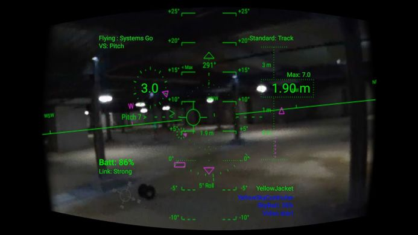
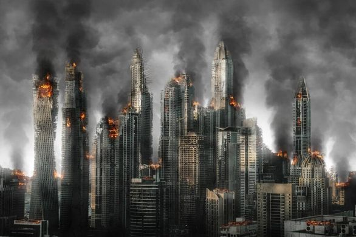
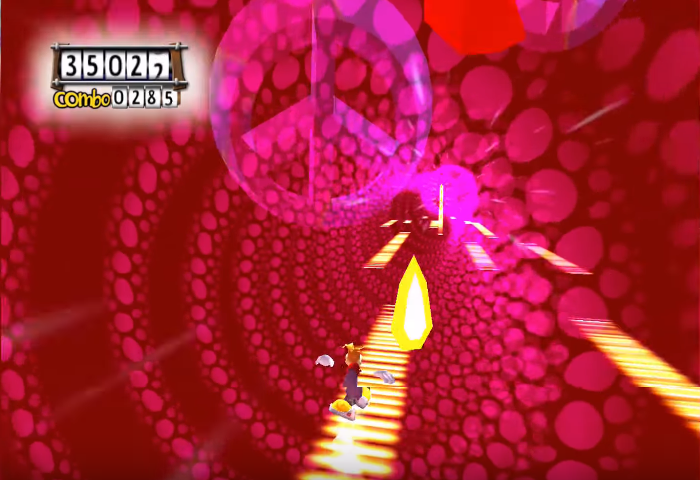

Drones is the preface of the game I designed for the ENJMIN contest, whose theme was connected to a series of ARTE documentaries. I decided to create a narrative game in which the player embodies a drone traveling across Earth in a post-apocalyptic setting to learn more about the planet’s decline. Through its discoveries, the player realizes that everything is tied to a corporation that built its fortune through more or less ethical marketing practices. The game would be played with a flight-simulator-style joystick, and the player’s HUD would resemble the interface from Metroid Prime, but with data specific to drones (altitude, speed, sonar readings).


Don't Panic is my next game idea. It would be a game created with the Unity engine, where the goal is to save a cargo of metals from space pirates.
To do this, the player would simply need to avoid obstacles scrolling across the screen.
However, the challenge would come from the fact that the player must use a heart rate sensor, and the speed of the obstacles would increase according to the player’s heartbeat.
In addition, the entire game environment would push the player toward making the mistake of panicking, with the music constantly speeding up and the background colors shifting.
The game is inspired by Rayman 3, particularly its Funkyboard slider levels and the psychedelic atmosphere they convey.
